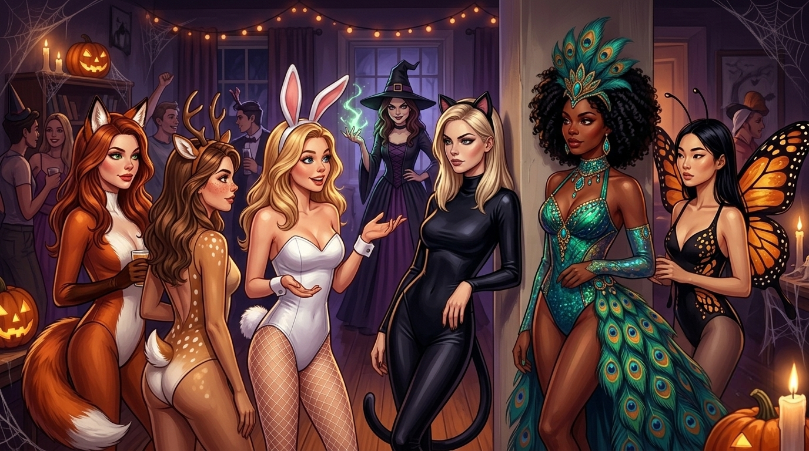
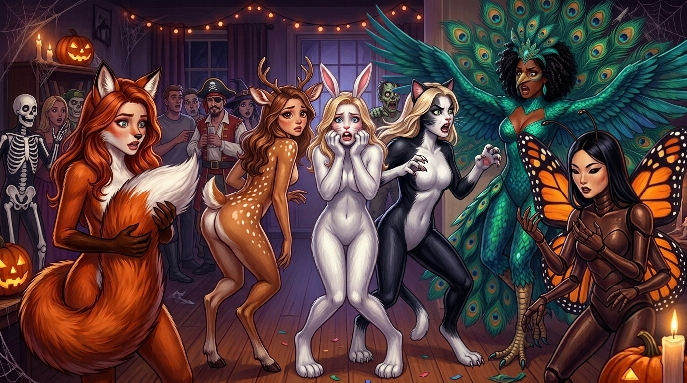

Happy Halloween!
It's hard to believe that only a year ago, I had just finished my second novel-length story and decided I deserved to have a little fun, so I wrote a "lighter" story and posted Hex Lives of College Girls on Halloween night. I had enjoyed writing my prior stories, they were helping me work through some stuff in a way that felt really good, but Hex Lives was the first time I'd had an absolute blast writing something.
I long to get back to that feeling. But it seems that my mind doesn't want to let that happen, at least not just yet. Yes, that means no new chapter of the Phis at the moment. I've got something else in the works, another lighter/fun side project that I'm hoping will start the gears turning, but it's not quite ready to share with you. Stay tuned.
But I didn't want to turn away all you lovely trick-or-treaters emptyhanded! So I dug something out of the vault. I made these a few months ago, back when I was playing around with making character models and using them to test AI's character consistency skills. Given the subject matter, it didn't quite seem right to share at the time. But tonight it does! So here are the ladies of Phi Kappa Delta, all dressed up for a Halloween party.

Lovely, right? Everyone’s having a great time. Nothing could possibly go wrong. That can't possibly be a witch back there, looking at the sisters like Portia just ran over her cat.

Lesson learned: always check the guest list.
(Click to enlarge, or see them full size on my DeviantArt page!)
I’m still here, still working through things, and still thinking about our girls. Thank you for your patience. It means more than you know.
xoxo, Paige